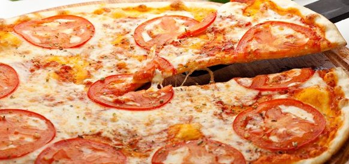

Pizza Napolitana
Ingredientes
MASA:
Harina 0000 o 000 (300g)
Agua tibia (180ml)
Levadura (15g)
Sal (1 cucharita)
Aceite de girasol o maiz (1 cuchara sopera)
TOPPINGS:
Queso musarella (350g)
Salsa de tomate (200ml)
Tomates redondos (2 unidades)
Hojas de albahaca (8 unidades)
Preparacion
Activacion de la levadura:
Disuelve la levadura en el agua tibia dentro de un jarro y espere 10 min
coloque el resto de la harina
